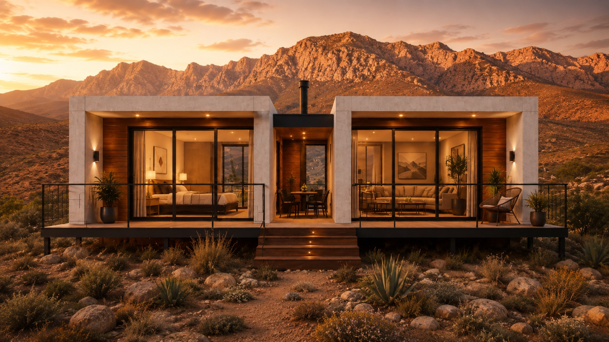

Sustainability · Durability
A 50-year home is a different climate proposition.
Embodied carbon is, almost always, reported in tonnes of CO₂ per square metre. What it rarely accounts for is how long the square metre lasts. A building that delivers 50 years of service spreads the same embodied carbon over twice the period of a building that delivers 25.
Design life is, in that sense, a sustainability metric — not just a structural one.

What 50 years means in design.
A 50-year design life is not a marketing figure. SANS 10100 and EN 1990 / EN 1992 — the structural design codes our engineers work to — set 50 years as the standard service life class for residential structures. Durability provisions in EN 206 and SANS 50100-2 specify the cover, exposure class, and water-to-cement ratio needed to deliver that life.
Reinforced concrete cast at 40 MPa, with appropriate cover and the right exposure class, reaches the 50-year envelope without specialised additives. It is, by some margin, the most durable mainstream residential structural material available.

The maintenance burden that never arrives.
Lightweight residential systems — steel-frame with cladding, timber-frame — typically need a major façade or cladding intervention every 25–35 years. Each intervention is itself a carbon load: the embodied carbon of the replacement material, the transport, the labour, the waste.
Reinforced concrete modules carry no recurring façade-replacement cycle. No termite risk. No timber rot. No annual paintwork on exposed structural members. The maintenance schedule of the building is dominated by what is inside the modules, not what holds them up.
What a long life actually delivers.
01 · Carbon
Embodied carbon, amortised.
The same embodied carbon spread across twice the service life — effectively halving the annual carbon intensity of the home.
02 · Cost
No recurring façade renewal.
No cladding-replacement cycle, no major repaint of exposed structure. The total cost of ownership flattens.
03 · Asset
A house that becomes an inheritance.
Buildings that last long enough to be inherited materially change the wealth profile of the household that owns them.
04 · Resilience
Better climate exposure.
Concrete handles high temperatures and humidity without deformation. Cyclone and storm performance is among the strongest of available residential systems.
05 · Insurance
Lower lifecycle risk.
Insurance underwriting on reinforced concrete is more predictable, particularly in fire and water-damage scenarios.
Durability is a climate metric.
The sustainability conversation often pays too little attention to design life. A building that lasts 50 years instead of 25 effectively halves the embodied carbon spread across its useful period. Everything else — water, waste, recurring material loads — moves in the same direction.
For developers serving affordable and mid-market segments, the durability dividend also closes the gap between social and environmental impact. A 50-year home is the longest-running social investment a building company can make. We build for the longer one.